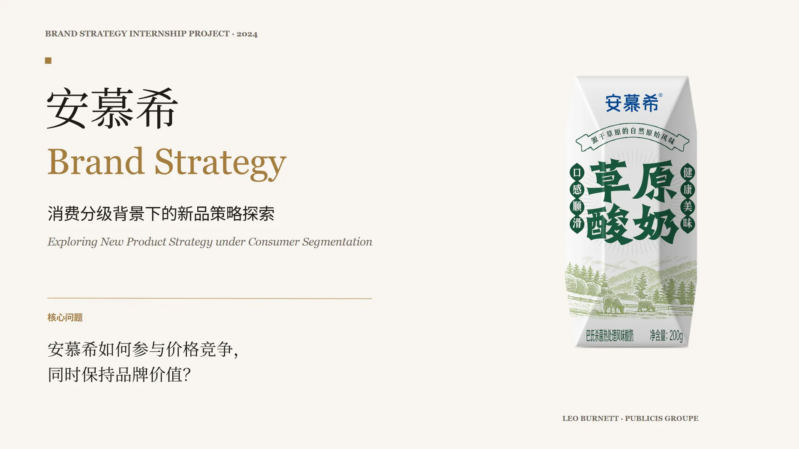
↓
Scroll to view full project
Brand Strategy / Product Innovation
安慕希
新品策略项目
2024
- Category
- Brand Strategy
- Role
- Research / Strategy Support / Concept Development
- Format
- 15 Slides
在阳狮集团李奥贝纳实习期间，参与安慕希品牌策略项目，围绕消费分级趋势和常温酸奶价格竞争参与消费者研究、竞品分析、新品概念探索及包装方向讨论，并协助形成“草原酸奶”产品概念。
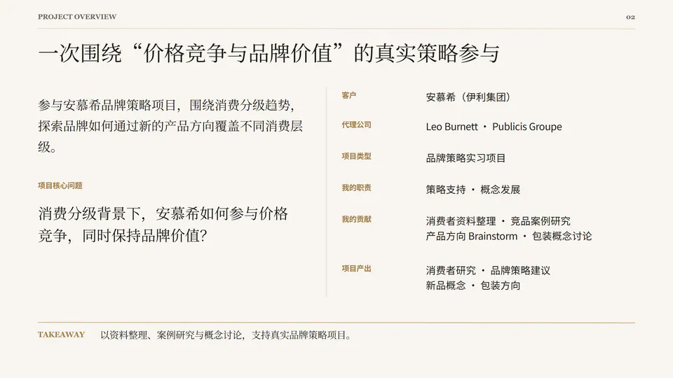
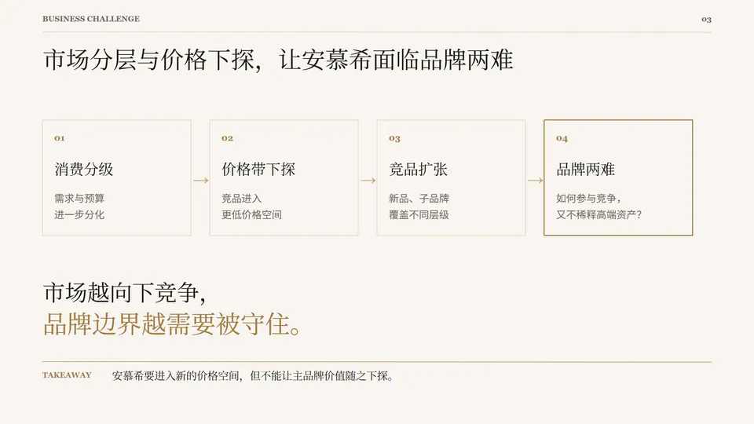
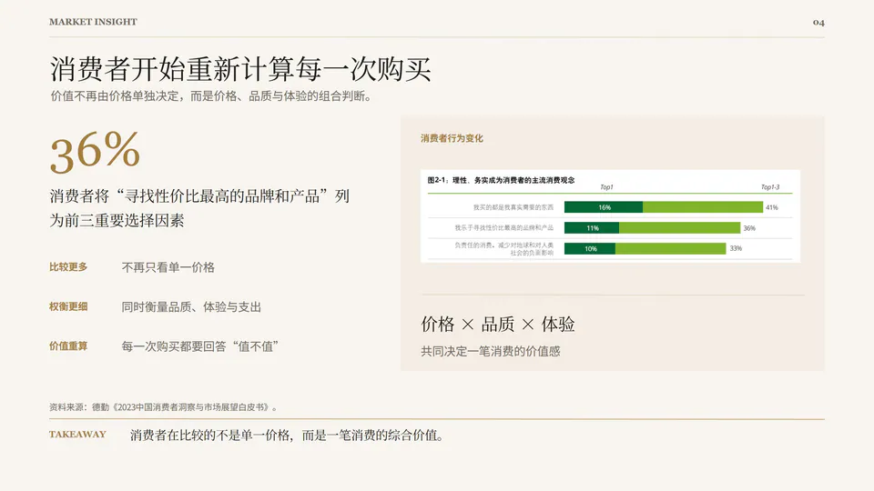
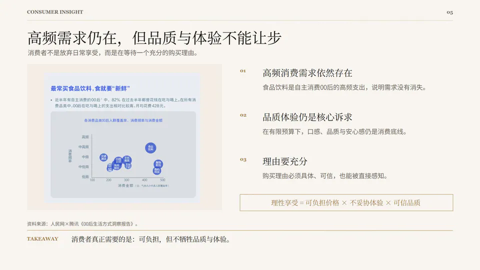
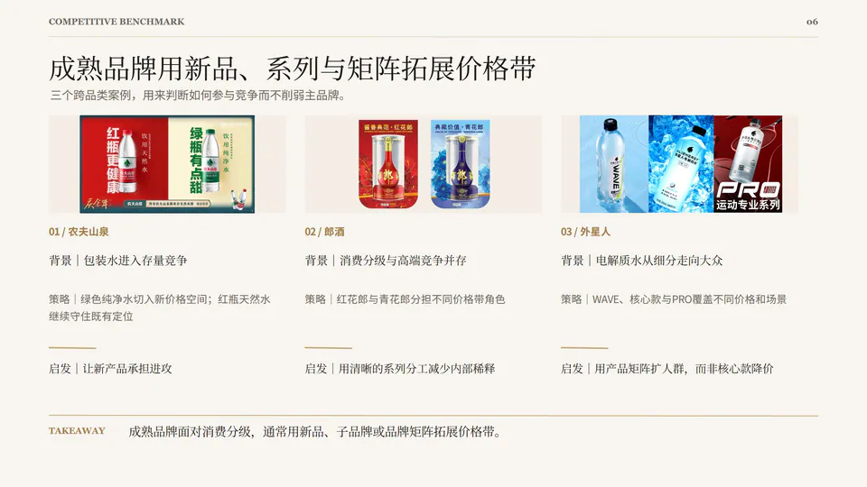
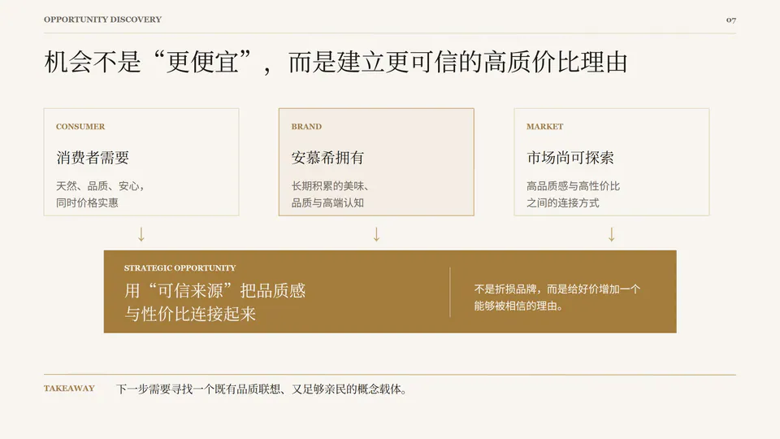
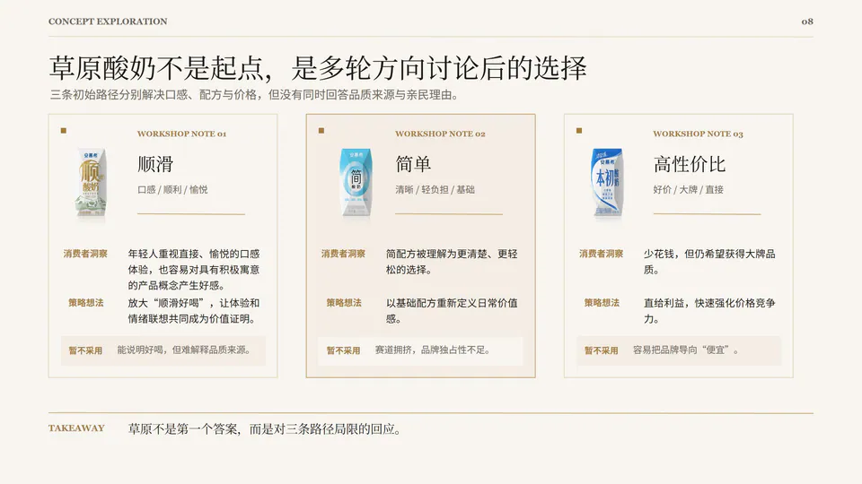
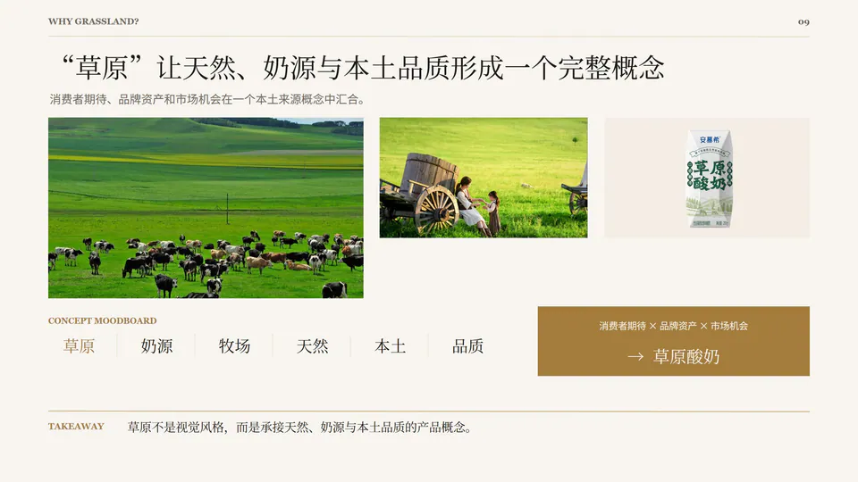
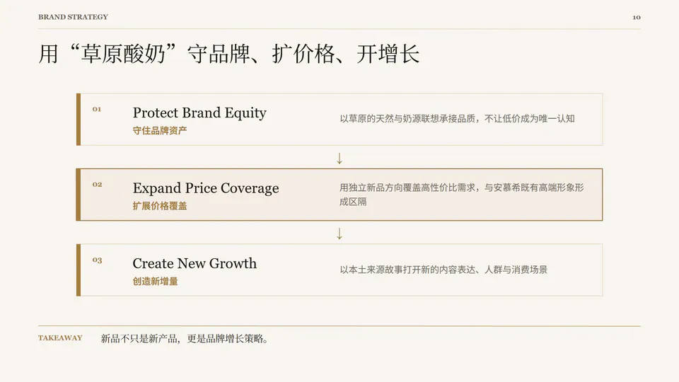
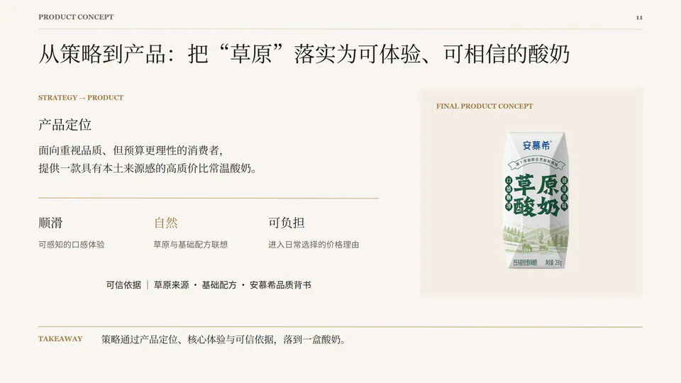
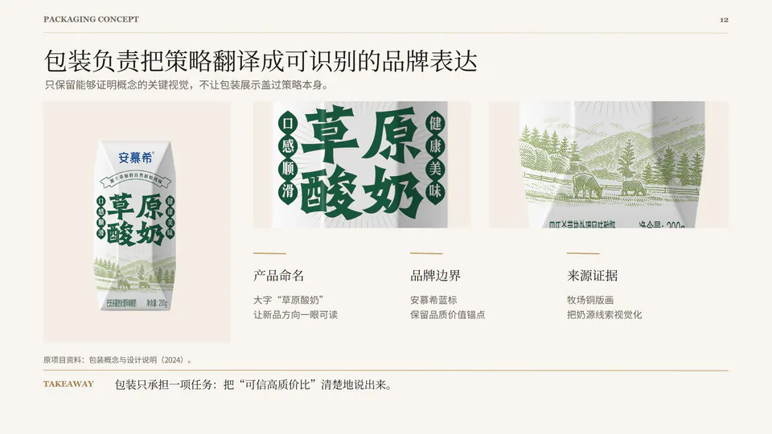
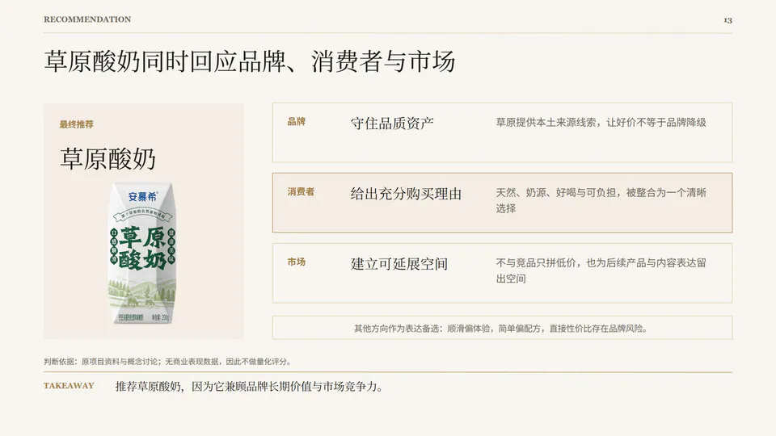
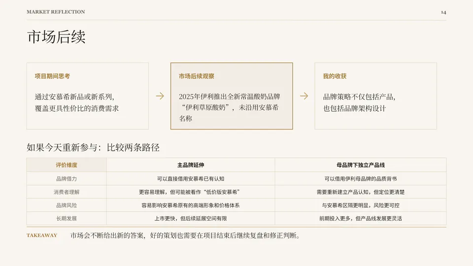
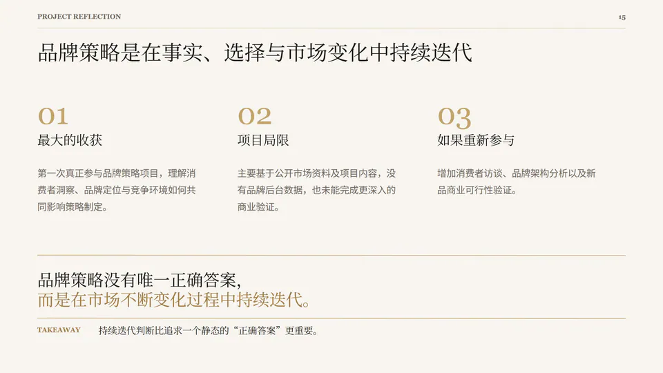